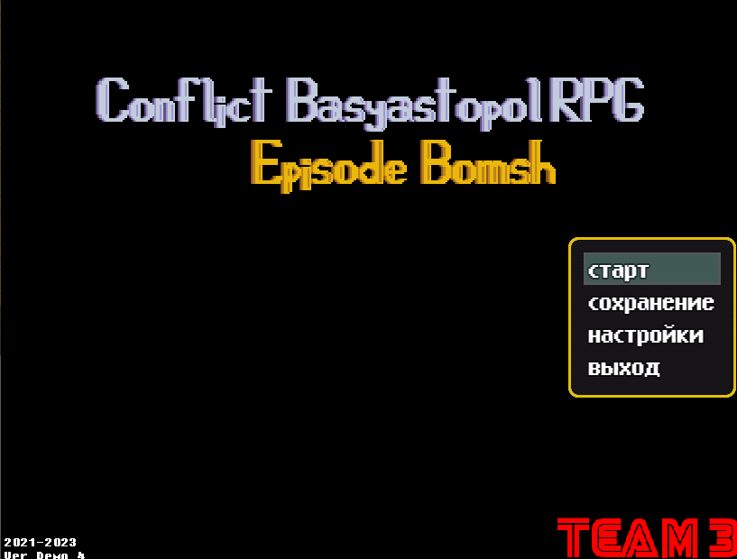

Conflict Basyastopol RPG: Episode Bomsh

Дата создания:2021-2024
Жанр:JRPG
Продолжительность:1 час
Автор:Никита Channel
Статус:Неактивен
Платформа:Windows
Эта игра была создана по вселенной Алекса Криша. Разработка началась в 2021 году и продолжается по сей день.Дата создания:2021-2024
Жанр:JRPG
Продолжительность:1 час
Автор:Никита Channel
Статус:Неактивен
Платформа:Windows
Отличительной особенностью этой игры от предыдущей является наличие целостного сюжета.
Сюжет
Действия игры происходят в момент событий Конфликта Басястополя. Бомж уезжает из Басястополя на поезде. Однако поезд минируют и ему приходиться сражаться с террористом.
Происходит крушение, и Бомж выживает.
Он встречает своего давнего знакомого. От него он узнает что сестра Хоши Пуш планирует нападение на Басястополь. Бомжу предстоит собрать 3 детали для ремонта вертолёта и остановить наступление её наёмников. В дальнейшем он найдет себе товарищей, которые помогут ему в прохождении квеста.